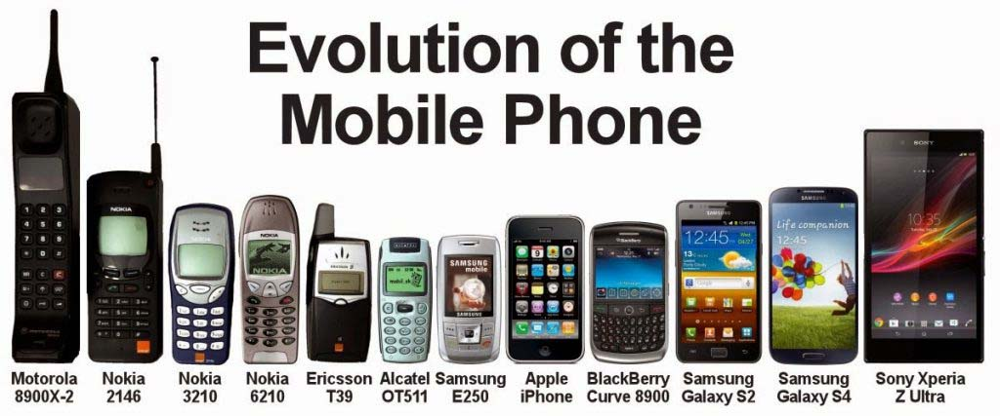
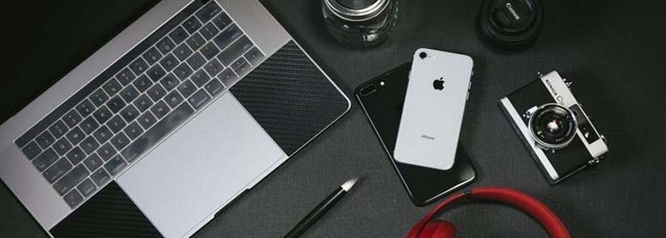

Sejarah & Pengertian Tentang Gadget
Pontianak, 1 Agustus 2022 - 12.57
oleh Irfanda Anugerah (VANZGADGET.COM)
Gadget atau biasa disebut dengan gawai merupakan alat komunikasi yang hadir karena kemajuan teknologi. Dunia teknologi yang berkembang pesat sekarang ini membuat gawai atau disebut dengan gadget juga ikut meContohnya seperti dulu hanya bisa mendengarkan musik lewat radio, namun sekarang ini sudah banyak gadget yang bisa digunakan untuk mendengarkan musik seperti MP3, ipod dan lain sebagainya.
Contohnya seperti dulu hanya bisa mendengarkan musik lewat radio, namun sekarang ini sudah banyak gadget yang bisa digunakan untuk mendengarkan musik seperti MP3, ipod dan lain sebagainya.
Pengertian Gadget Secara Umum
Jika dilihat secara umum, pengertian dari gadget adalah perangkat elektronik yang memiliki ukuran kecil. Gadget memiliki fungsi khusus dan sangat praktis untuk dipakai. Sedangkan menurut pendapat lain, gadget merupakan alat elektronik berukuran kecil yang dapat dibawah bepergian dengan lebih mudah.
Gadget merupakan kata serapan yang diambil dari bahasa Inggris yang jika diartikan menjadi perangkat elektronik ukuran kecil dengan fungsi khusus dan pasti mengalami pembaharuan.
Gadget diidentikkan dengan unsur kebaruan yang menjadi pembeda dengan perangkat elektronik lain. Setiap hari akan ada gadget baru yang muncul dilengkapi dengan teknologi terbaru yang juga semakin canggih.
Sedangkan jika disebutkan dalam bahasa Indonesia dari gadget adalah gawai. Meski begitu, pemakaian kata gadget lebih banyak digunakan sekarang ini dibandingkan dengan gawai.
Gadget menjadi bukti dari perkembangan teknologi dan keberadaannya juga dianggap penting. Untuk itulah, hampir semua orang sekarang ini sudah memiliki gadget dengan fungsi yang beragam. Namun, fungsi utama dari gadget itu sendiri adalah sebagai media komunikasi.
Fungsi lain dari gadget adalah sebagai sarana mempermudah mendapatkan informasi. Dengan adanya gadget, maka manusia sekarang ini bisa dengan mudah mengakses internet untuk memperoleh informasi.
Pengertian Gadget Menurut Para Ahli
Selain pengertian umum diatas, beberapa orang ahli juga mengemukakan pendapatnya masing masing tentang pengertian dari gadget. Berikut adalah pengertian gadget menurut beberapa orang ahli:
1. Menurut Garini Dalam Rohman
Ia berpendapat jika gadget adalah perangkat elektronik berukuran kecil yang memiliki banyak fungsi. Gadget dalam hal ini smartphone disebut juga dengan telepon genggam yang sekarang ini sudah dilengkapi banyak fungsi dan fitur untuk mempermudah ketika digunakan.
2. Menurut Derry
Derry berpendapat jika gadget merupakan sebuah instrumen atau perangkat elektronik. Fungsi dan tujuan gadget menurut Derry sangat praktis untuk membantu kegiatan manusia.
3. Menurut Manumpil dkk
Menurut Manumpil dkk, gadget merupakan alat teknologi yang sekarang berkembang pesat dan memiliki banyak fungsi khususnya iPhone, smartphone dan juga Blackberry.
4. Menurut Wikipedia
Di Wikipedia berbahasa Inggris, gadget diartikan sebagai alat berukuran kecil seperti mesin dengan fungsi tertentu dan sering disebut sebagai sesuatu yang baru.
Sementara menurut Wikipedia berbahasa Indonesia menyebutkan jika gadget sama seperti gawai. Gawai sendiri merupakan piranti yang mempunyai fungsi praktis dan dirancang jauh lebih canggih dibandingkan dengan perangkat yang sudah diciptakan sebelumnya.
5. Menurut KBBI
Pengertian gadget menurut KBBI adalah peranti elektronik atau mekanik yang memiliki fungsi praktis. Gadget merupakan kata benda yang ditunjukkan memakai kode n atau noun. Ini mengartikan jika gadget merujuk pada suatu benda dan bukan dari fungsinya.
Gadget merupakan benda yang memiliki bentuk berupa piranti elektronik atau mekanis dengan fungsi praktis. Fungsi praktis yang dimaksud sangat bervariasi seperti komunikasi, media sosial, mendengarkan musik,melihat video dan lain sebagainya.
Sejarah Gadget
Awal kemunculan gadget sebenarnya tidak bisa dijelaskan secara menyeluruh. Ini disebabkan karena kata gadget bukanlah lambang dari sebuah barang atau benda namun klasifikasi dari banyak jenis komponen seperti handphone.
Untuk itulah jika berbicara tentang sejarah gadget, artinya sama seperti membahas tentang sejarah dari perangkat handphone. Awalnya, istilah handphone belum dikenal karena alat komunikasi ketika itu masih menggunakan perantara kabel atau menggunakan sinyal radio yakni handy talkie atau walkie talkie.
Ketika itu, perangkat telephone belum disebut gadget sepenuhnya karena penggunaannya masih tergolong sulit dengan bobot 35 pon. Kemudian di generasi pertama dan kedua, telepon dimodifikasi sehingga lebih ringan dan sudah menggunakan antena mini untuk menangkap sinyal radio.
Masuk ke generasi ketiga, sistem operasi pada handphone mulai diperkenalkan seperti android, symbian serta Java. Dari sejak itu, user internet mulai diperkenalkan dan fungsi handphone mulai serupa dengan PC. Sedangkan ketika masuk ke generasi keempat sampai sekarang, muncul istilah smartphone yang memakai teknologi sinyal 4G.
Jenis Gadget
Gadget terdiri dari banyak jenis dan masing masing memiliki fungsi yang berbeda. Berikut adalah beberapa jenis gadget yang biasa digunakan untuk kehidupan sehari-hari:
1. Handphone
Jenis gadget pertama adalah handphone yang sudah sangat banyak digunakan sekarang ini. Perkembangan handphone dari tahun ke tahun juga sangat pesat, namun yang paling banyak dipakai sekarang ini adalah smartphone. Umumnya, smartphone memakai sistem android, iOS serta Windowsphone.
2. Komputer dan Laptop
Komputer dan laptop menjadi jenis dari gadget berikutnya yang banyak digunakan sekarang ini. Umumnya, komputer dan laptop dipakai untuk kebutuhan pekerjaan dan juga sekolah. Ini adalah gadget yang memerlukan sistem supaya bisa dijalankan memakai Mac, Windows, Linux dan berbagai sistem lain.
3. Tablet dan iPad
Jenis gadget selanjutnya adalah tablet dan iPad. Ukuran tablet lebih besar jika dibandingkan dengan handphone. Kelebihannya adalah bisa menampilkan gambar lebih besar dan lebih jelas. Ketika menggunakan tablet dan iPad, banyak pengguna yang merasa lebih nyaman khususnya ketika dipakai untuk bermain game, menonton serta berbagai kegiatan lain.
4. Kamera Digital
Selain handphone, komputer dan laptop serta tablet dan iPad, ada lagi jenis gadget lainnya yakni kamera digital. Kegunaan utama dari gadget yang satu ini adalah untuk menangkap gambar dan juga video.
5. Headset dan Headphone
Headset dan headphone juga termasuk dalam jenis gadget yang biasa digunakan sekarang ini. Untuk kegunaan utama dari headset dan headphone adalah untuk mendengarkan musik dan suara ketika menonton video.
6. Televisi 3D
Jenis gadget berikutnya yang juga sudah mulai banyak digunakan sekarang ini adalah televisi 3D. Gadget ini memberikan gambar yang jauh lebih baik dibandingkan TV pada umumnya, tampilan lebih hidup dan menambah keseruan ketika bermain game. Bahkan, hampir semua produsen TV sekarang ini juga sudah menghadirkan teknologi 3D untuk produk TV yang ditawarkan.
7. Konsol
Gadget berikutnya adalah konsol yang sudah cukup banyak dikenal sekarang ini. Beberapa jenis konsol diantaranya adalah Xbox, Playstation, Nintendo dan sebagainya. Jenis permainanan yang ditawarkan gadget ini juga sangat beragam dengan tampilan grafis beresolusi tinggi.

Tentang Penulis
Irfanda Anugerah adalah seorang Mahasiswa semester 4 di salah satu Politeknik Negeri yang ada di kalimantan. Dia sangat menyukai hal berbau Anime dan juga memiliki Sense Design yang lumayan bagus. Berbekal skill Corel Draw & Photoshop yang sangat membantu dia dalam membuat Web ini.
Share our website


Introduction

Vanz Gadget adalah situs web artikel bertema gadget. Dibuat pada tanggal 30 Mei 2022 oleh Irfanda Anugerah..
Artikel Populer


Artikel Lainnya
5 Smartphone dengan Fast Charging Tercepat Saat Ini